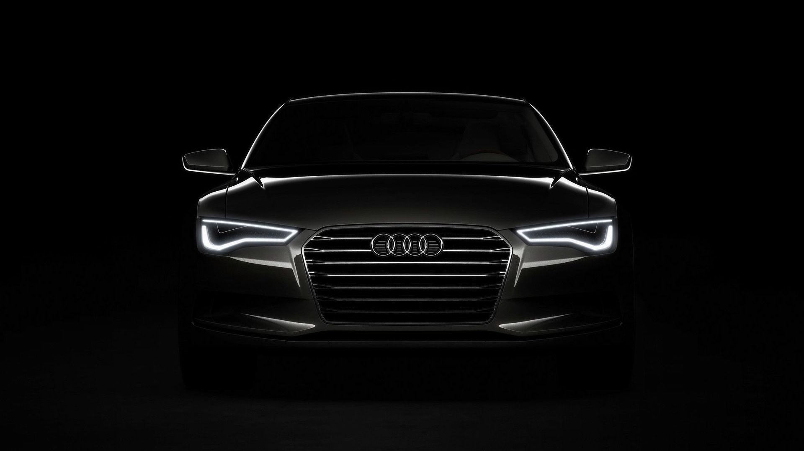
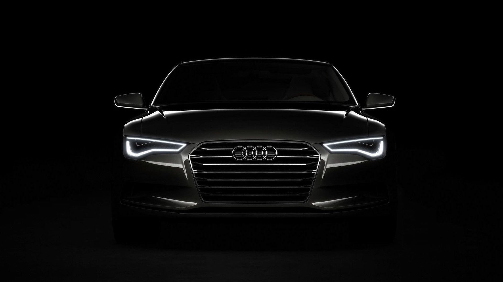
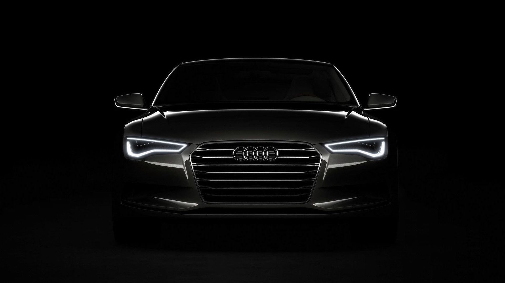

Media
here are some of its images.hope you'll purpose to get one soon.
 

check out more about it .click me
The 2018 R8 Spyder takes its supercar status to the next level.
The powerhouse 532-hp V10 engine puts out 398 lb-ft of torque and adds
balance through its mid-engine drivetrain design.
To turn it up even more, an available 602-horsepower V10 plus engine boasts 413 lb-ft of torque,
and reduces curb weight through the use of carbon fiber materials in its construction.
Either way, the R8 Spyder shatters performance expectations.
The standard Audi virtual cockpit is a fully digital 12.3-inch instrument display
that allows the driver to customize
information
such as audio and available navigation, offering Classic and Infotainment modes
as well as Google Earth™.
The R8 Spyder has a third option: Sport mode, which displays a large, central tachometer
and performance statistics, such as a lap timer, horsepower and torque gauge, G-meter, and more.
here are few of the awesome features of the AUDI R8V10
